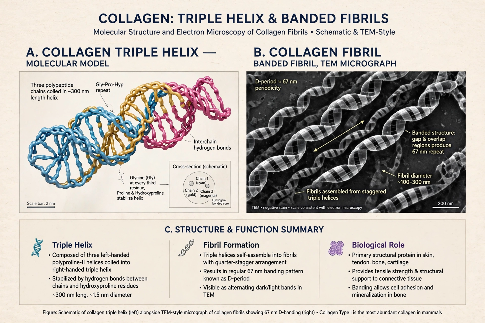

| Collagen | |
|---|---|
 | |
| Type | Structural protein (extracellular matrix) |
| Abundance | Most abundant protein in mammals (~25–35% of whole-body protein) |
| Structure | Triple helix of Gly–X–Y repeat chains |
| Key types | Type I (skin, bone, tendon), II (cartilage), III (reticular), IV (basement membrane) |
Collagen (from Greek κόλλα, kólla, "glue", and -γέν, -gen, "producing") is the main structural protein in the extracellular matrix found in the body's various connective tissues. As the main component of connective tissue, it is the most abundant protein in mammals, making up from 25% to 35% of the whole-body protein content. Collagen consists of amino acids bound together to form a triple helix of elongated fibril known as a collagen helix. It is mostly found in connective tissue such as cartilage, bones, tendons, ligaments, and skin.
Collagen molecules (tropocollagen) are about 300 nm long and 1.5 nm in diameter, formed of three polypeptide alpha chains wound into a right-handed triple helix. Every third residue is glycine, essential for the tight packing of the helix; proline and hydroxyproline are common at the other positions. Hydroxyproline, formed with vitamin C as cofactor, stabilizes the helix — its absence in scurvy weakens connective tissue. Fibrillar collagens (types I, II, III, V, XI) assemble into fibrils with a characteristic 67 nm banding pattern.
At least 28 types of collagen have been identified. Type I dominates in skin, tendon, and bone; type II in cartilage; type IV forms the sheet-like basal lamina. Mutations in collagen genes cause disorders including osteogenesis imperfecta (brittle bone disease, type I), several forms of Ehlers–Danlos syndrome, and Alport syndrome (type IV). Autoimmune attack on type II collagen is implicated in some arthritis models.
Gelatin is collagen that has been irreversibly hydrolyzed by boiling, used in food, photography, and pharmaceuticals. Collagen is used in cosmetics, dietary supplements, wound dressings, tissue engineering, and as casings for sausages; medical-grade collagen serves in reconstructive surgery and as a scaffold for cell growth.
See also: Gelatin · Extracellular matrix · Scurvy